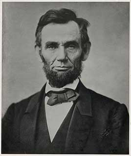

Elected in 1860 on a platform against the spread of slavery; eleven Southern states seceded. He led the Union through the Civil War, issued the Emancipation Proclamation, pushed the 13th Amendment abolishing slavery through Congress, and signed the first federal income tax, paper money ('greenbacks'), the Homestead Act and the transcontinental railroad. He also suspended habeas corpus and allowed the military arrest of thousands of civilians. He was assassinated days after the war ended.
Shaded areas show the years in office, with a few years before and after for comparison. Budget years ran July to June until 1976 (now October to September), so each year's figures cover parts of two calendar years.
June 30, 1860 (end of fiscal 1860): $64.84 million → June 30, 1864 (end of fiscal 1864): $1.82 billion
Daily debt figures don't exist before 1993, so Lincoln's numbers use the fiscal years closest to his term, the same rule as every other page. The Civil War took the debt from $65 million to $2.68 billion by June 30, 1865, eleven weeks after his death.
Debt as a share of GDP. Above 100% means the debt is bigger than a year of everything the country produces.
Money borrowed each budget year (below the line) or paid down (above). The White House budget office's yearly figures begin in 1901.
No national estimates before 1890. Economist Stanley Lebergott's yearly estimates, the earliest national series, begin in 1890
How much prices rose each year (consumer price index).
What everyday prices and paychecks did while in office.
Prices use the consumer price index (MeasuringWorth). The minimum wage is the federal rate set by Congress.
48 orders. Count from the American Presidency Project. His best-known acts, like the Emancipation Proclamation, were proclamations, not executive orders.
Yearly counts aren't reliable for this era. Orders were not numbered until 1907, when the State Department numbered the ones already in its files, and many orders were never numbered at all, so only the total is shown.
Source: American Presidency Project: executive orders (full list of every order).
Set up a federal court in Union-occupied Louisiana. It is numbered 1 because the State Department later numbered orders starting from it.
Federal RegisterA proclamation, not an executive order: declared enslaved people in Confederate-held areas free and allowed Black men to join the Union army. It did not apply to border states that stayed in the Union.
Federal RegisterIncomplete: orders before 1929 were not numbered or collected consistently. This archive has 119 of the roughly 48 orders counted for this president.
Source: Executive Orders Archive, compiled from the American Presidency Project and the Federal Register. Topics are the archive's automated tags; "Revoked" and similar labels come from the Federal Register's records.
A pardon wipes out the punishment for a federal crime; a commutation shortens a sentence but leaves the conviction. The Justice Department's published counts begin in 1900. In December 1863 he offered a pardon by proclamation to most Confederates who swore loyalty to the Union.
The Justice Department's published clemency counts begin in fiscal 1900, so there are no reliable yearly totals for this presidency.
Source: U.S. Dept. of Justice, clemency statistics, which lists every recipient with the crime and sentence.
The crime: Killings of settlers during the U.S.–Dakota War in Minnesota (military commission, 1862)
Sentence: Death
Why it drew attention: Lincoln reviewed the trial records and let 39 of the 303 death sentences stand, later reprieving one more; 38 men were hanged on December 26, 1862, the largest mass execution in U.S. history.
SourceThe crime: Speech against the war (military commission, 1863)
Sentence: Prison for the rest of the war
Why it drew attention: An Ohio Democratic leader arrested by the Army for a speech. Lincoln changed his sentence to banishment to the Confederacy.
SourceThe crime: Slave trading (convicted 1861)
Sentence: Death
Why it drew attention: Lincoln refused to commute the sentence, granting only a two-week delay. Gordon was the only American executed for slave trading.
SourceThe same checklist for every president. Tap a row for details and sources.
No articles of impeachment were voted on.
Never charged.
No one was convicted. The House censured his first war secretary, Simon Cameron, in 1862 over corrupt and wasteful Army contracts.
SourceNone were appointed.
There was no Justice Department or FBI yet. Lincoln suspended habeas corpus and allowed military arrests of civilians, including critics of the war. The Supreme Court ruled in 1866 (Ex parte Milligan) that military trials of civilians where regular courts were open were unconstitutional.
SourceWhat happened, what was proven, and how it ended.
Lincoln suspended the right to challenge detention in court, first in Maryland and later nationwide, and ignored Chief Justice Roger Taney's 1861 ruling that only Congress could do so. About 13,000 civilians were held by the military.
Outcome: Congress authorized the suspension in 1863; the Supreme Court limited military trials of civilians in 1866.
SourceThe Army arrested Clement Vallandigham, a former Democratic congressman, for a speech attacking the war, and a military commission convicted him.
Outcome: Lincoln banished him to the Confederacy; the Supreme Court declined to review the case.
SourceAfter a war in Minnesota in which hundreds of settlers were killed, 38 Dakota men were hanged after trials that often lasted minutes.
Outcome: Lincoln had commuted 264 death sentences, over the protests of Minnesota officials; the Dakota were then expelled from the state.
SourceLincoln urged Black leaders at the White House to support colonizing freed people in Central America or Africa, and backed a failed settlement in Haiti.
Outcome: He stopped promoting colonization publicly after 1863.
SourceWidely quoted remarks, with the context they were said in.
My paramount object in this struggle is to save the Union, and is not either to save or to destroy slavery.
Government of the people, by the people, for the people, shall not perish from the earth.
With malice toward none, with charity for all.
I am not, nor ever have been in favor of bringing about in any way the social and political equality of the white and black races.